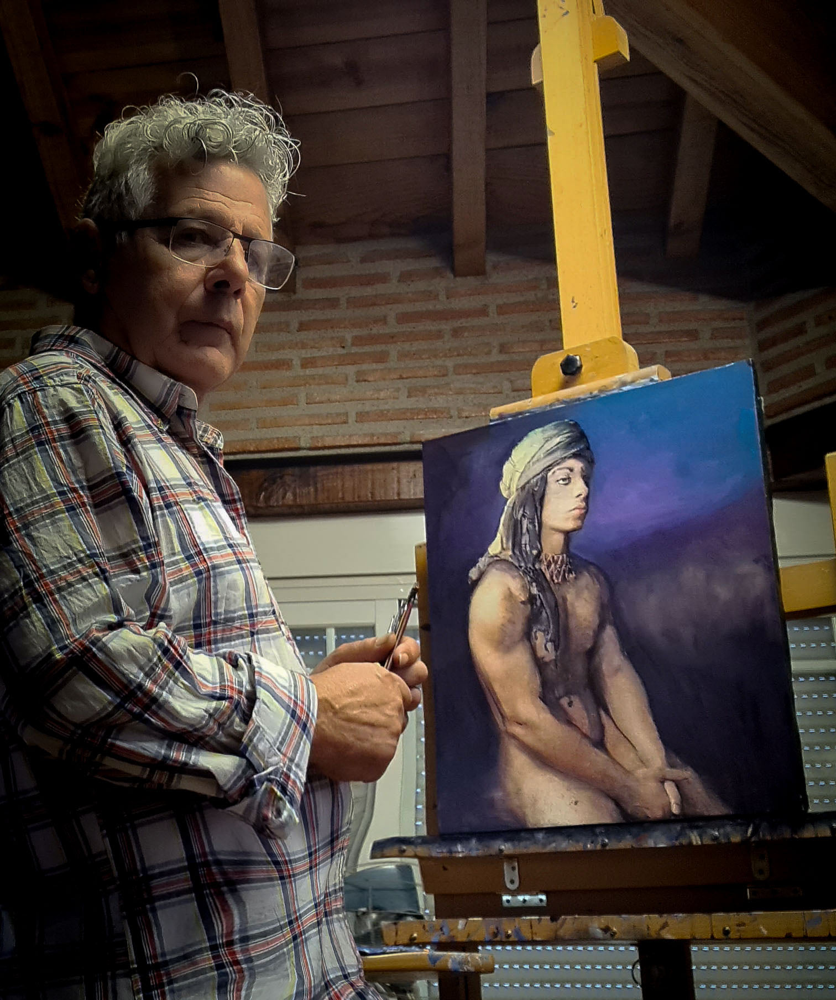

¿Quién es Jacinto García?

Jacinto Garcia es un pintor español conocido por su estilo impresionista y su habilidad para capturar emociones en sus obras. Nacido en Íllora, Granada en 1954, estudió en la Escuela de Arte y Oficios de Granada y comenzó su carrera como copista, pero pronto se convirtió en un pintor autodidacta. Su estilo se caracteriza por pinceladas rápidas y marcadas y su arte se inspira en su amada tierra de Granada, especialmente en la historia de Boabdil. Conocido por su habilidad para transmitir emociones a través de sus obras, Jacinto Garcia ha sido reconocido como uno de los pintores más importantes de su generación y ha sido expuesto en varias exposiciones tanto nacionales como internacionales.
Su trayecto artisitco
| AÑO | FECHA | TITULO | LUGAR DE LA EXPOSCICIÓN | LOCALIDAD |
|---|---|---|---|---|
| 2015 | octubre | Caminos de al-ándaluz | Terrabar | En el Realejo Granada. |
| Diciembre | Galería Carmar | Almuñecar | ||
| 2016 | Febrero | ZocaloArte | Ogijares Granada | |
| Abril | Torreón árabe de las Gabías | Las Gabias Granada | ||
| Junio | Sala del "Pósito | Loja Granada | ||
| Julio | Hotel Gar Anat | Granada | ||
| Agosto | Reciclarte | Castillo de Carchuna | Granada | |
| Septiembre | Granada en papel | ZocaloArte | Ogijares Granada | |
| 2017 | Septiembre | La Granada de las dos orillas | ZocaloArte | Ogijares Granada |
| 2018 | Octubre | Trabajo y Luz | ZocaloArte | Ogijares Granada |
| 2019 | Marzo | Plenitud | ZocaloArte | Ogijares Granada |
| 2020 | Septiembre | Paraísos perdidos | Convento de San Antonio | Montefrío |
| 2021 | Abril | Espejismos | Cuarto Real | Santo Domingo |
| 2022 | Marzo | El paisaje en mis manos | Casa García de Viedma | Armilla |